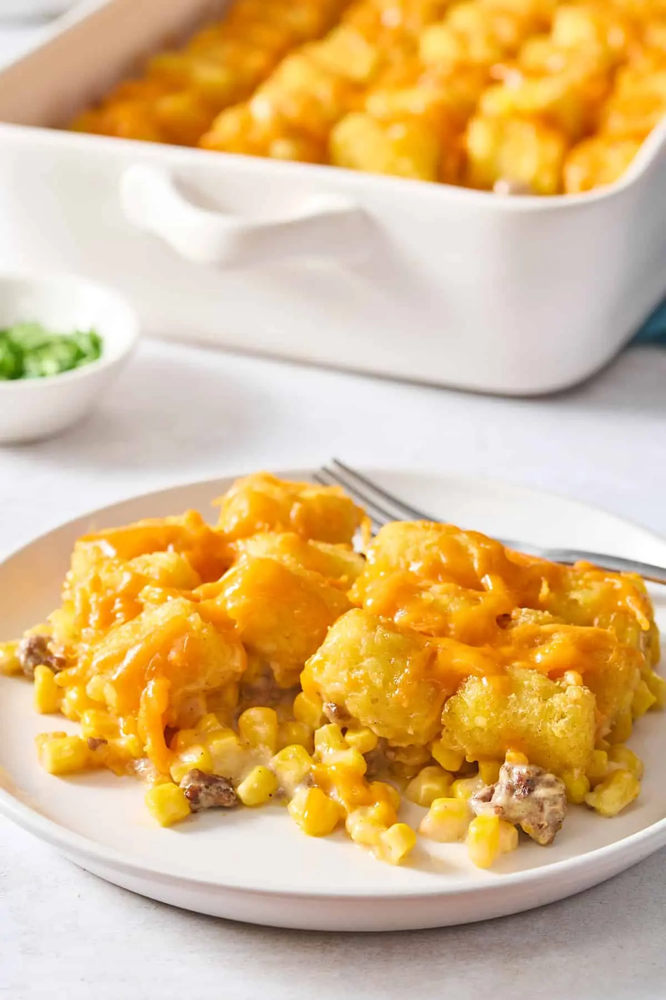

Cowboy Casserole
- Total time35 mins
- Serves8
- Ingredients10
- Steps6

Ingredients
- 1/2 pound ground beef
- 1 can (15.25 ounces) corn, drained
- 2/3 cup condensed cream of chicken soup
- 1/2 cup shredded cheddar cheese
- 1/2 cup whole milk
- 2 Tablespoons sour cream
- 1 teaspoon garlic powder
- 1/2 teaspoon salt
- 1/4 teaspoon ground black pepper
- 2 cups frozen tater tots
Directions
- Preheat your oven to 375ºF. Grease a 9×13” baking dish.
- Add the ground beef to a large skillet and heat over medium high heat, chopping into small pieces as it cooks. Cook the beef until it is no longer pink, about 8 minutes.
- Stir in the corn, condensed chicken soup, ¼ cup of the shredded cheese, milk, sour cream, garlic powder, salt, and pepper. Remove the pan from the heat.
- Spread the ground beef mix into the 9×13 baking dish then top with the tater tots.
- Sprinkle the layer of tater tots with the shredded cheese.
- Bake for 20 to 25 minutes. The cheese will be melted and starting to turn golden brown. Enjoy while hot!
Recipe credit: allthingsmamma.com